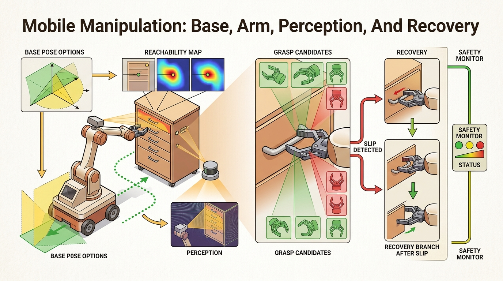

"A mobile manipulator is a negotiation between reachability and route planning."
A Whole-Body Systems Notebook

Mobile manipulation couples navigation, perception, reachability, grasping, and recovery into one long-horizon control problem. The base pose is part of the grasp plan, not just a precondition for it.
This section explains how base position, arm kinematics, visibility, and recovery policies interact in whole-body manipulation. Good mobile manipulators plan for navigation and grasping together, not as isolated modules.
It synthesizes earlier material on navigation, mapping, manipulation, and recovery into one application-grade system loop with explicit evidence artifacts.
If the base is staged poorly, even a perfect arm policy will look stupid. Whole-body success depends on choosing poses that preserve visibility, reachability, and recovery margin simultaneously.
Theory
The central object is a coupled cost over base pose, arm configuration, visibility, collision risk, and task progress. Local arm planning cannot be optimal if the base pose destroys reachability or line of sight.
This coupling is why mobile manipulation is a natural benchmark for embodied AI. It forces a policy or planner to reason across spatial scales and across multiple failure channels in one episode.
$$ (q_b^\star, q_a^\star) = \arg\min_{q_b, q_a} C_{\text{route}}(q_b)+C_{\text{reach}}(q_b,q_a)+C_{\text{view}}(q_b)+C_{\text{risk}}(q_b,q_a) $$
The robot builds a semantic map, chooses candidate base poses that preserve arm reachability and visibility, executes a staged manipulation plan, and routes to retreat or reobserve when local evidence disagrees with the global map. A good evidence artifact contains route, base pose, arm plan, and recovery branch together.
- Generate candidate base poses near the target region and reject ones with poor reachability or visibility.
- Plan a local whole-body sequence: base settle, arm approach, contact action, and retreat corridor.
- Refresh local perception after base arrival before committing the arm plan.
- If the grasp or contact fails, retreat to a safe standoff pose before replanning.
Worked Example
# Score candidate base poses for reachability, view, and risk.
candidates = [
{"pose": "b1", "reach": 0.92, "view": 0.55, "risk": 0.20},
{"pose": "b2", "reach": 0.80, "view": 0.90, "risk": 0.10},
{"pose": "b3", "reach": 0.95, "view": 0.30, "risk": 0.35},
]
scores = []
for c in candidates:
score = round(0.5 * c["reach"] + 0.4 * c["view"] - 0.6 * c["risk"], 3)
scores.append((c["pose"], score))
scores.sort(key=lambda row: row[1], reverse=True)
print(scores)Expected output: The expected ranking prefers the slightly less reachable pose with much better visibility and lower risk. That is often the right whole-body decision in homes, warehouses, and service settings.
Nav2, MoveIt, BehaviorTree.CPP, Habitat 3.0, ManiSkill, BEHAVIOR-1K, and Mobile ALOHA provide much of the plumbing. The hard systems work is choosing the joint evidence schema that makes navigation and manipulation failures comparable.
Practical Recipe
- Score base poses with visibility and retreat feasibility, not just arm reachability.
- Refresh local perception after arriving at the base pose because small route errors matter near contact.
- Reserve space for retreat and human-safe recovery before the arm starts moving.
- Log route, base pose, arm plan, and failure branch in one artifact.
- Benchmark on tasks where the first base pose is intentionally suboptimal so recovery is exercised.
Treating mobile manipulation as navigation followed by grasping usually creates hidden dead ends. The base may arrive in a place where the target is visible but not reachable, or reachable but unsafe to recover from.
Perception goes stale between route planning and contact. A robot that builds its grasp plan from the map captured 2 meters away will often find that the object has shifted, the cabinet door is at a different angle, or a person has stepped into the retreat corridor. Systems that do not refresh local perception after base arrival (a depth scan or wrist-camera frame at standoff distance, typically 0.3-0.5 m) fail silently: the arm plan executes against a stale model and the first sign of trouble is a collision or a missed grasp, not a planning error. Mobile ALOHA and the Habitat 3.0 rearrangement benchmark both expose this failure channel because tasks require re-observing the scene at multiple scales before committing to contact.
Household robots opening cabinets, carrying dishes, or picking objects from cluttered floors routinely need to re-stage the base to obtain a better wrist approach and a safer retreat corridor.
A mobile manipulator can absolutely reach the wrong place with stunning confidence. That is why the base pose deserves as much suspicion as the grasp pose.
Frontier systems combine foundation-model perception, whole-body planning, and large-scale household simulation. The lasting contribution is still an evidence loop that reveals why a task failed across route, staging, contact, and recovery layers.
Could you justify your chosen base pose using reachability, visibility, and retreat margin, or did the robot simply stop where navigation happened to end?
Mobile manipulation is a clean example of multi-timescale reasoning. Global route planning runs over meters and seconds, while contact control runs over centimeters and milliseconds. Whole-body success depends on passing the right abstractions between those scales.
It is also a useful place to teach coupled evaluation. A navigation benchmark and a grasp benchmark can both look strong while the combined system fails because the interfaces between them were never optimized together.
| Tool or Library | Role in the Topic | Builder Advice |
|---|---|---|
| Nav2 | Base navigation and route execution | Use costmaps and recovery behaviors that leave manipulation staging space. |
| MoveIt 2 | Arm planning after staging | Use it to evaluate reachability and contact-free arm motion from each base pose. |
| BehaviorTree.CPP | Whole-body task routing | Helpful for retry logic that spans route, stage, and grasp failures. |
Construct a mobile-manipulation benchmark with three candidate base poses per task. Show that your system chooses a pose with better whole-body success than a nearest-goal heuristic.
When a task fails, ask whether the route, the base pose, the local perception refresh, the arm plan, or the retreat branch first violated its contract. Mobile manipulation only becomes debuggable once those labels stay separate.
Section References
Official navigation stack reference for staged base motion and recovery.
Simulator for interactive embodied tasks with navigation and manipulation.
Mobile bimanual manipulation system showing whole-body teleoperation and data-driven control.
Mobile manipulation is a whole-body coordination problem whose success depends as much on base staging and recovery margin as on arm control.
Design a base-pose scoring function for a mobile manipulator that must pick an object from a shelf and retreat through a narrow aisle. Include one term for visibility and one for retreat safety.